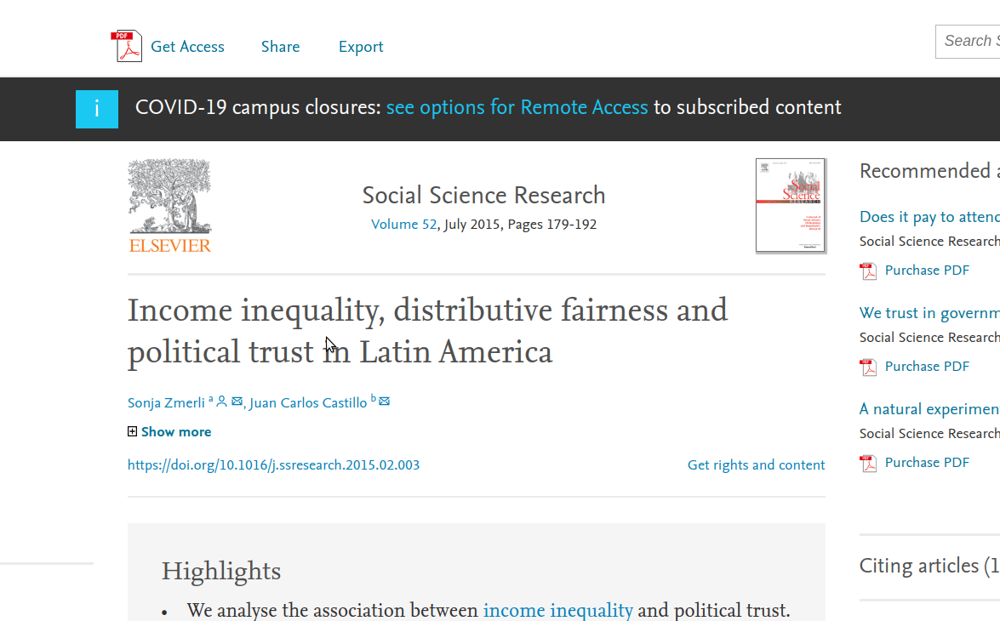

Introducción: Crisis de acceso y de transparencia en el quehacer científico
¿Es la ciencia una actividad cerrada? Si es así, ¿Es un problema?¿Se puede avanzar en su solución?
El uso de la palabra abierta junto a ciencia tiene sin duda un sentido crítico hacia formas de hacer ciencia que se caracterizan por las restricciones y el cierre. Parte importante de esta crítica tiene que ver con el difícil acceso a los resultados de investigaciones científicas, por barreras tanto comunicacionales como también económicas. El concepto de barreras de pago (paywall), una de las principales críticas a la ciencia actual, justamente consiste en que se debe pagar para poder acceder al resultado de investigaciones (en la forma típica de “el paper”).
Veamos un ejemplo: intentemos acceder a la publicación de los resultados de una investigación que fue financiada por fondos públicos (FONDECYT):https://doi.org/10.1016/j.ssresearch.2015.02.003

Este es un artículo publicado en una revista perteneciente al consorcio editorial Elsevier. A menos que se acceda desde una red que ha pagado una suscripción institucional para esta revista (por ejemplo, una Universidad), lo que va a aparecer es lo que muestra la imagen: para acceder al conocimiento hay que pagar. Parece difícil de entender, pero la publicación académica en revistas de alto impacto se ha entrampado en este flujo: los investigadores envían sus artículos a revistas (que en ocasiones también cobran por la revisión), en el caso de ser publicado ceden sus derechos a la editorial, y la editorial luego vende los derechos a la universidad en forma de suscripciones anuales, y al público general en forma de pago por el acceso a cada artículo.
En este punto se podría intentar justificar este modelo de negocio editorial pensando que todo el proceso de edición ciertamente no es gratis. Pero la discusión es sobre cuánto cuesta realmente y quién debe financiarlo. Por ejemplo, el margen de ganancias de Elsevier el año 2018 fue de 37%, siendo un negocio claramente lucrativo basado en barreras de acceso al conocimiento.
¿Qué consecuencias posee el cierre del acceso al conocimiento? Se pueden destacar dos:
el público general no tiene fácil acceso a resultados de investigaciones financiadas por sus propios impuestos
Las y los investigadores que no pueden acceder a resultados previos no cuentan con los antecedentes óptimos para desarrollar sus estudios. Se aumenta el riesgo de reinventar la rueda y el consiguiente despilfarro de recursos públicos valiosos
Por lo tanto, un primer aspecto crítico del quehacer científico actual tiene que ver con el cierre del acceso a resultados de investigación por barreras de pago. Un segundo aspecto crítico es anterior a los resultados y tiene que ver con el proceso de investigación
…
Este libro tiene dos fuentes de inspiración principales. La primera es un artículo de Jake Bowers titulado “Six steps for a better relationship with your future self”, y la segunda es el trabajo de Kieran Healey, en particular su libro de “The Plain Person’s Guide to Plain Text Social Science.” (Healy 2018)
Idea 2: Existen muchos libros, páginas y foros de análisis de datos; también existen manuales de escriura tipo “como hacer una tesis” o “diseño de investigación social”, pero casi no hay guias que discutan y apoyen las deciciones que se toman en el proceso mismo de la investigación. ¿Dónde escribo? ¿Cómo analizo los datos? ¿Cuál es la mejor manera de colaborar? Estos procesos son cerrados, tal como académicos y académicas se encierran en sus oficinas a producir con maneras sui-generis y que cada uno va escogiendo según le acomoda. …
Temas a abordar:
- Acceso
- Reproducibilidad
- Colaboración
- Comunicación
References
Healy, Kieran. 2018. The Plain Person’s Guide to Plain Text Social Science.